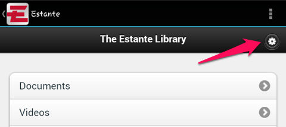
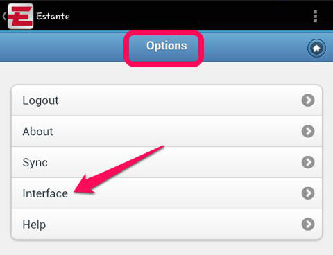
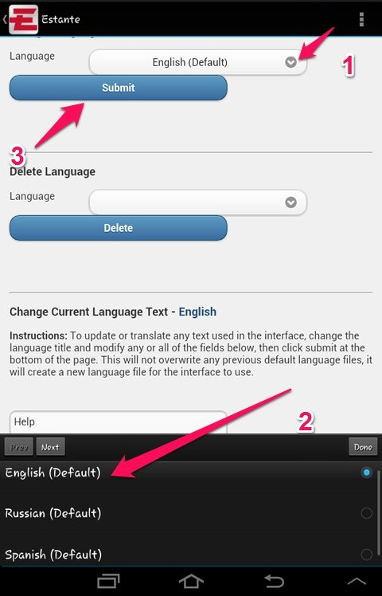
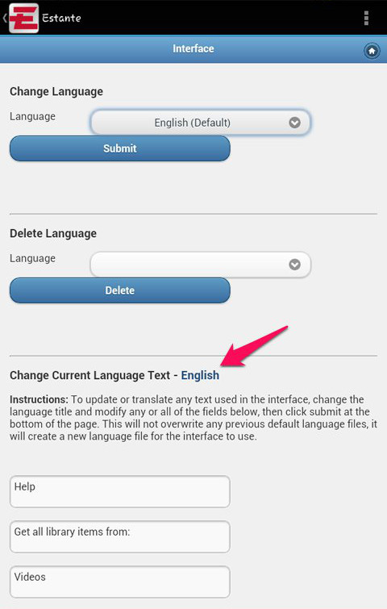

How can I change the language of Estante’s interface?
Estante comes with a limited number of languages that you can use to change what language is used for Estante’s interface. Estante also provides a way for you to change the language into whatever language you prefer.
Please watch this detailed video that will show how to do this:
Instructions
Use a language provided in Estante
On your Estante home page, tap the gear icon in the upper right.
Under options, choose interface. This takes you to the Change Language page.
Tap the icon to the right of the listed language. This will open a list of available languages at the bottom of the page.
Select the language.
Tap done.
Tap Submit.
Translate and use a language that is not provided
This method will require that you translate the words used in the interface into the language of your choice. Once translated, you can add the language to the list of available languages.
On your Estante home page, tap the gear icon in the upper right.
Under options, choose interface. This takes you to the Change Language page.
Scroll down the page until you get to “Change Current Language Text” and follow the instructions there.
Under Title, enter the language name.
Tap Submit.
You will find your language now under the list of available languages. Follow the directions above to make that language the default language.
Instructions with screen shots
Use a language provided on your Estante
On your Estante home page, tap the gear icon in the upper right to get to the options menu.

Under options, choose interface.

This takes you to the Interface page where you can change the language.

Tap the icon to the right of the listed language (1). This will open a list of available languages at the bottom of the page (2).
Select the language (2).
Tap Submit (3).
Translate and use a language that is not provided.
This method will require that you translate the words used in the interface into the language of your choice. Once translated, you can add the language to the list of available languages.
On your Estante home page, tap the gear icon in the upper right.
Under options, choose interface. This takes you to the Change Language page.
Scroll down the page until you get to “Change Current Language Text” and follow the instructions there.

Under Title, enter the language name.
Tap Submit.
You will find your language now under the list of available languages. Follow the directions above to make that language the default language.